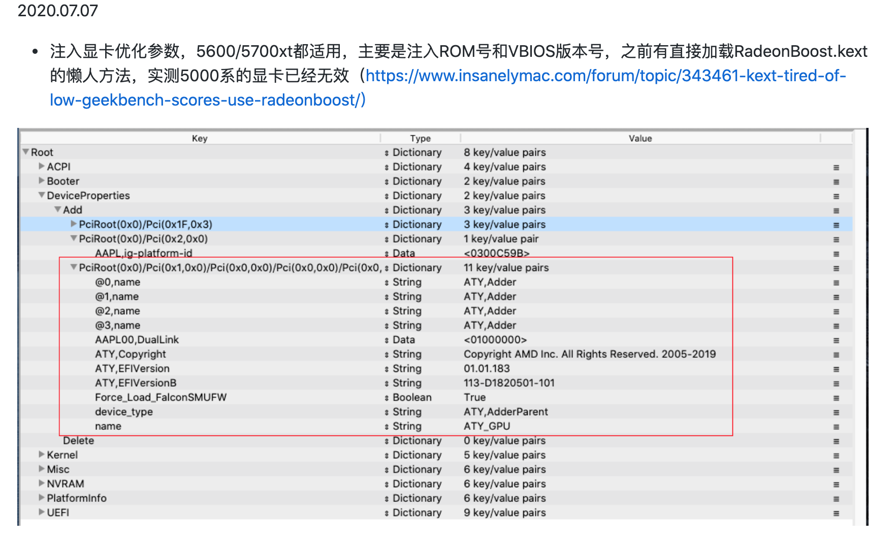

准备工作
我们在开始前需要知道这几个网站, 因为所有资源都来自其中
我的电脑配置
| 类目 | 型号 |
|---|---|
| 处理器 | Intel i7-10700 |
| 主板 | Gigabyte B460M AORUS PRO M-ATX |
| 显卡 | 蓝宝石 RX5600XT 6G |
| 内存 | 十铨（Team）DDR4 3200 16GB（8GB×2）火神系列 |
| 硬盘 | 金士顿(Kingston) 1TB SSD固态硬盘 M.2接口(NVMe协议) A2000系列 |
| 无线 | 博通BCM943602CS |
| 散热 | 玄冰400双刃 |
| 电源 | Tt 600W Toughpower GX1 RGB (80PLUS金牌/日系主电容/静音风扇) |
| 机箱 | Tt 启航者S3+黑色 |
| 显示器 | 优派4K 23.6英寸IPS VX2478-4K |
制作MacOS系统安装盘(U盘)
系统镜像采用微信首发】macOS Catalina 10.15.6 19G2021 正式版 Clover 5120/OC/PE三分区支持Intel及AMD双平台原版镜像
下载镜像
请前往黑果小兵的部落阁或者关注黑果小兵的部落阁微信公众号下载镜像
可选: 校验MD5值
4a32cf1d5c37809dfb87f33eda5d50ed
制作镜像
下载etcher -> 打开镜像 -> 选择U盘 -> 点击Flash即可.
Windows10需要管理员权限
制作镜像需要一点时间, 请耐心等待
安装前的准备
BOIS基本设置
实际上使用技嘉主板,只需要开启VT-X、禁用VT-D即可
禁用如下：
| 英文 | 中文 |
|---|---|
| Fast Boot | 快速启动 |
| CFG Lock (MSR 0xE2 write protection) | CFG 锁 (MSR 0xE2 写入保护) |
| VT-d | VT-d |
| CSM | 兼容性支持模块 |
启用如下：
| 英文 | 中文 |
|---|---|
| VT-x | VT-x |
| Above 4G decoding | 大于 4G 地址空间解码 |
| Hyper Threading | 处理器超线程 |
| Execute Disable Bit | 执行禁止位 |
| EHCI/XHCI Hand-off | 接手 EHCI/XHCI 控制 |
| OS type: other types | 操作系统类型: 其他 |
拷贝适合自己的文件
引导U盘制作好了之后, 我们还需要根据自己电脑的硬件替换EFI下的ACPI、Drivers、Kexts
- ACPI系统补丁文件
- Drivers引导系统的驱动文件
- Kexts安装系统的
打开EFI—Kexts，我们把常用的一些kexts先放进去，一般情况下你需要放如下Kexts:
| 名称 | 作用 |
|---|---|
| *Lilu.kext | Acidanthera驱动全家桶的底层依赖/下载地址 |
| *Applealc.kext | 声卡驱动/下载地址 |
| *VirtualSMC.kext | 传感器驱动依赖 /下载地址 |
| *SMCProcessor.kext | CPU核传感器/同上 |
| *SMCSuperIO.kext | IO传感器/同上 |
| *WhateverGreen.kext | 核显&显卡驱动/下载地址 |
| *IntelMausi.kext | Intel类千兆网卡驱动/下载地址 |
| *Usbinjectall.kext | USB驱动 （你也可以定制自己的USB补丁）/下载地址 |
| *NVMeFix.kext | 为NVME硬盘增加ASPT属性来保证节电，虽然对台式机没啥用，但是官方推荐所有NVME用户都使用此补丁/下载地址 |
编辑配置config.plist
需要根据自己的配置编辑修改config.plist
EFI引导项配置
这里需要用到BOOTICE工具
我遇到的问题
- 选择完之后跑日志, 循环刷日志, 屏幕中出现 🚫 符号
这个问题后面发现是U盘插在3.0接口的问题, 所以务必使用2.0USB接口安装系统
- 选择完之后, 跑完日志, 重启就黑屏了
这个问题是由于config.plist中关于显卡配置的问题导致的. 可以参考以下链接

同时添加SSDT-RX5600XT.aml到/EFI/ACPI/下, 并在config.plist中配置好
- 在进入MacOS安装界面后, 选择
磁盘工具格式化需要安装MacOS的盘符时, 提示无法完成该操作
这个问题是由于系统ESP分区过小的问题导致的, 我们进入win pe系统中,通过d添加ESP分区分配1G空间, 再重新进入安装工具格式化磁盘即可解决问题
目前系统出现的问题
- 无法睡眠,